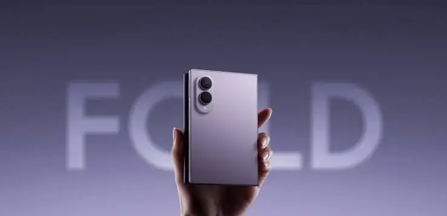
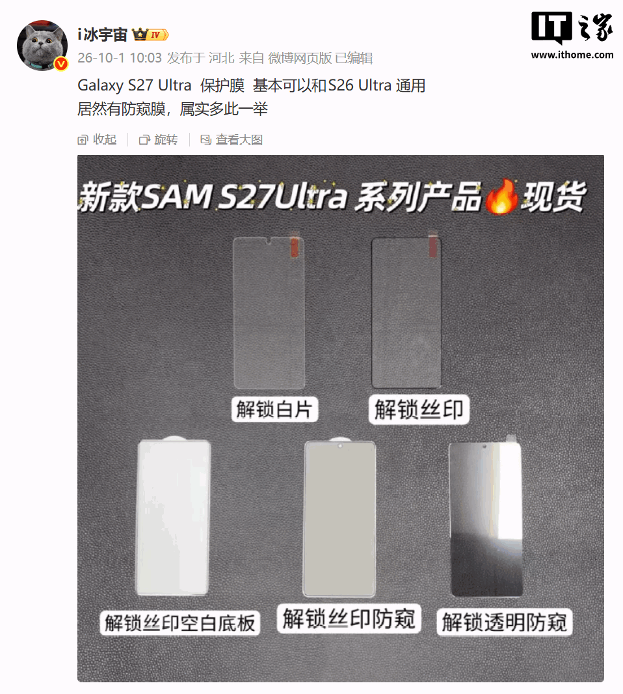
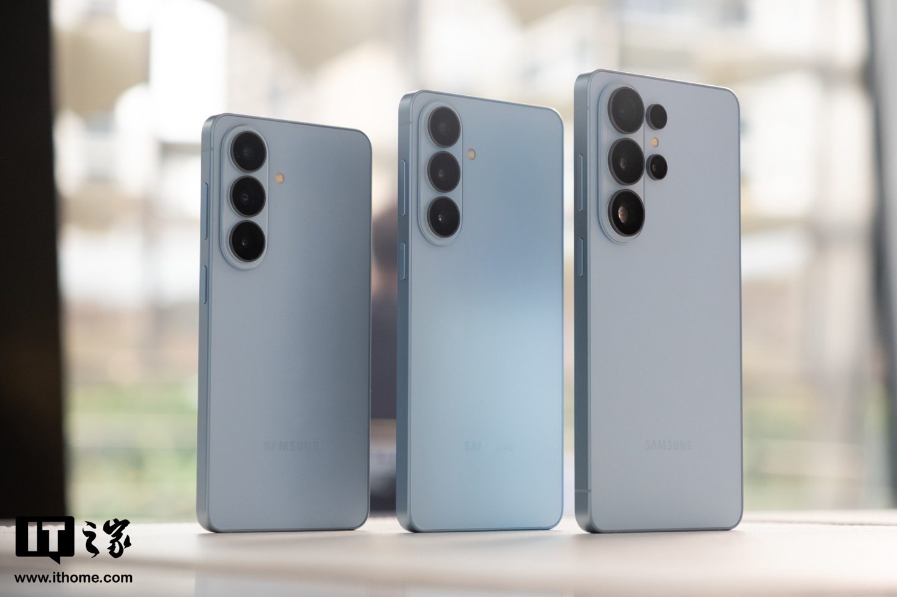
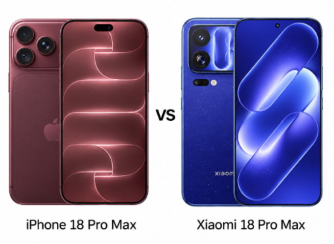
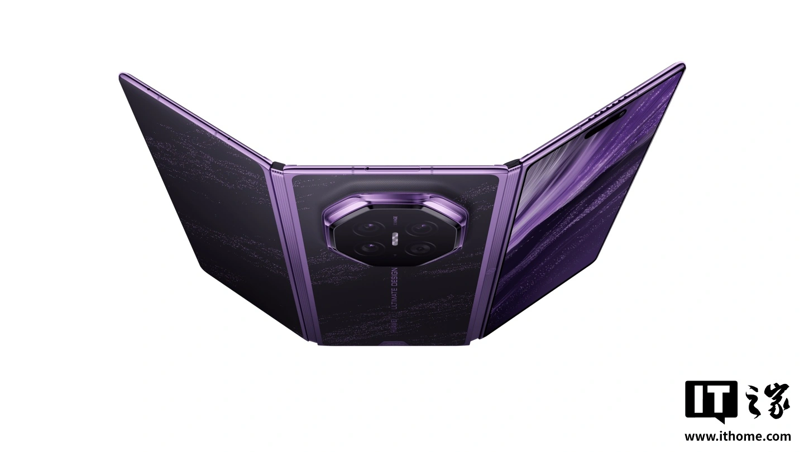
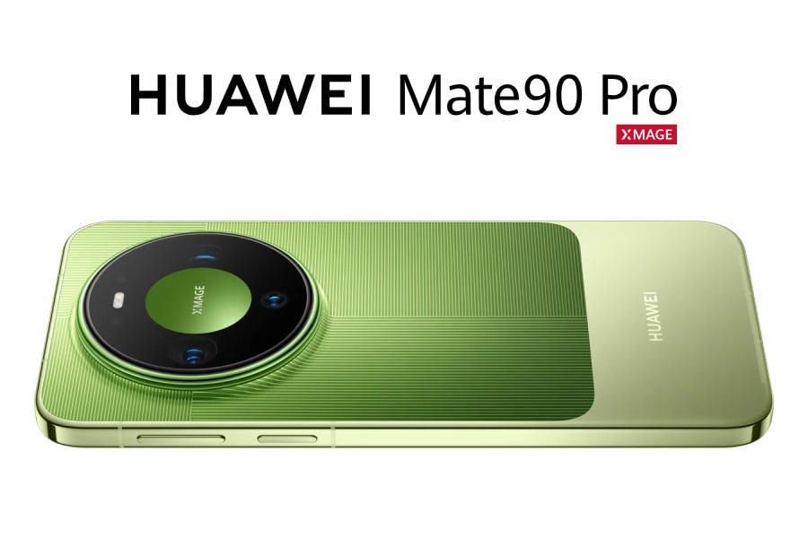
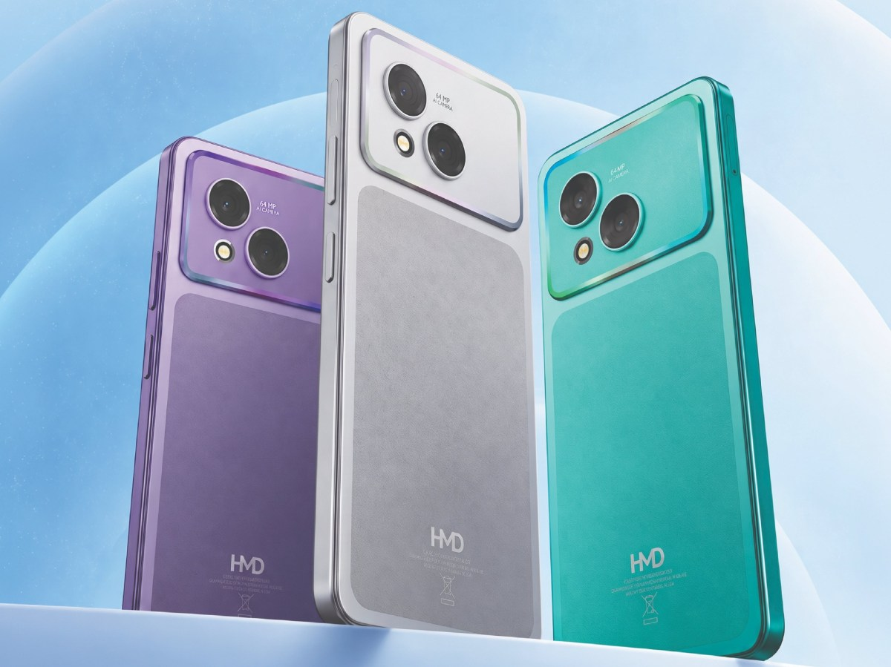

THE TECH EDIT
기술의 변화, 매일 한눈에.
카메라 · 스마트폰 · AI, 해외 테크 소식을 모아 전합니다.
최근 발행2026-10-02
새로 들어온 소식
LATEST STORIES최신 뉴스
전체 3,426개 기사
Samsung, 10~11월 Galaxy Z Fold8 시리즈 폴더블 스마트폰 114만 대 생산 계획, Fold8 와이드 폴더블 비중 가장 높아
Samsung Galaxy S27 Ultra 스마트폰 무게 218g, 사진 색감은 Apple iPhone 18 Pro Max에 근접

Samsung Galaxy S27 Ultra 스마트폰 보호 필름 유출, S26 Ultra와 기본적으로 호환
Samsung Galaxy S27 Pro/Ultra 스마트폰 공개: 가로형 매트릭스 카메라 유닛, Qi2 자기 흡착 내장 가능성

Samsung Galaxy S27 시리즈 스마트폰 전 모델 가격 인상, 표준 모델 시작가 최대 13만 원 인상
Samsung Galaxy M08 및 Galaxy F08, 6,000mAh 배터리, 50MP 카메라, 2032년까지 소프트웨어 지원 제공하며 출시
HBM4 기판 4nm 공정 수요 증가로 Samsung 파운드리 2026년 적자 41.8% 감소 전망
전/현직 Microsoft 직원이 Apple 최초 폴더블 아이폰 Duo에 대해 논의: "Surface Duo 개발자는 가슴을 칠 수밖에 없을 것"
AI가 반도체 수요 폭증 견인, 한국 9월 수출 사상 최고치 경신

아이폰 18 Pro Max vs 샤오미 18 Pro Max: 애플이 더 비싸지만 더 좋을까?

iPhone 18 표준 모델 첫 공개: Apple A20 칩 솔더링 이미지 유출, 5코어 GPU 추정

Huawei Mate XT 2 삼단 폴더블 스마트폰, HarmonyOS 7.0.0.109 SP8 업데이트로 통신 공유 기능 업그레이드 및 다중 사용자 상호 공유 지원

화웨이 메이트 90 프로 맥스, 12,000니트 디스플레이, 200MP 잠망경 망원, 1인치 모듈형 카메라 시스템 탑재 출시

화웨이 메이트 90 프로, 기린 9035, 가변 조리개 카메라, 6,600mAh 배터리 탑재 출시

HMD Vibe2 Pro 스마트폰 출시: 6.78인치 1080P LCD 스크린, Dimensity 6300 칩 탑재
액션 카메라 브랜드 GoPro, M43 연합 공식 합류

Google Pixel 10a 스마트폰 일본 가격 인상: 시작가 92,800엔, 최대 16.15% 인상
Apple의 새로운 스마트 홈 기기 설정 과정 유출, "Photo Face" 단계 추가
Apple iOS 27, 디지털 건강 가이드 통합: 부모가 iPhone 18 Pro 등 자녀의 스마트폰 사용을 과학적으로 관리하는 6단계 방법
Apple iOS 27.0.1 미수정: 일부 사용자, 새로운 조작으로 iPhone 18 Pro/Max 충돌 발생 보고

Apple HomeHub 홈 허브 사진 인터페이스 유출, iPhone Duo 폴더블 스마트폰 대기 모드와 유사한 디자인
검색 결과가 없습니다
다른 검색어를 입력하거나 필터를 초기화해 보세요.